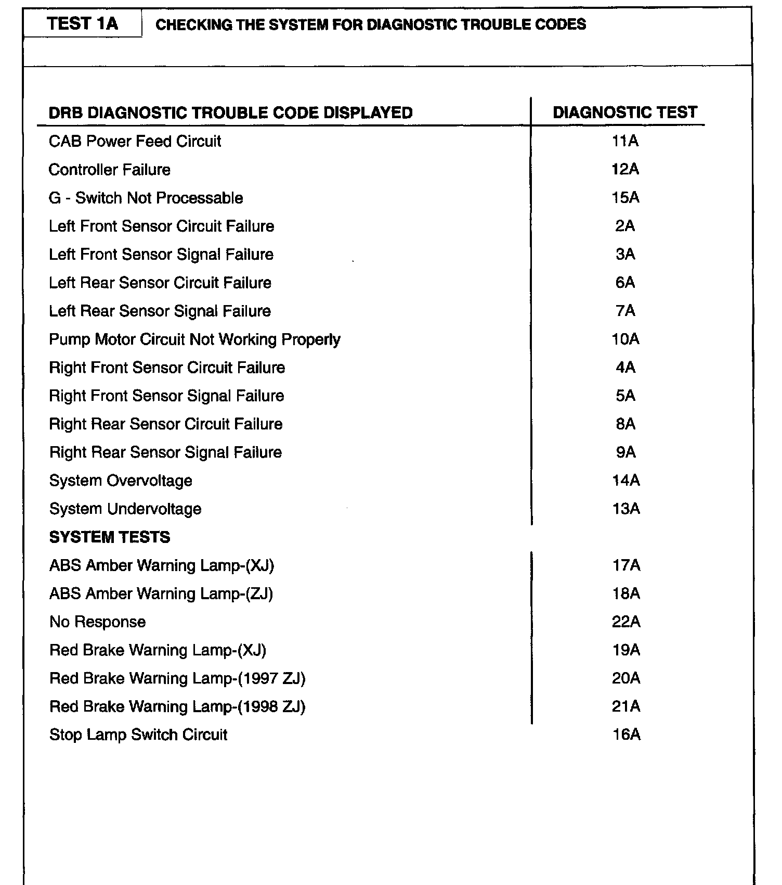

Antilock Brakes / Traction Control Systems
Chrysler does not provide any trouble code number-driven diagnostics for this system. Testing information is provided for codes retrieved via the Chrysler Diagnostic Box Readout (DRB) in code description text format only. Alldata users have reported success using the code number with description by a generic scan tool matching the description to diagnostic information listed.
DTC Chart:

The Teves Mark 20 Antilock Brake System (ABS) module may report any of the following diagnostic trouble codes:
- CAB Power Feed Circuit
- Controller Failure
- G Switch Not Processable
- Left Front Sensor Circuit Failure
- Left Front Sensor Signal Failure
- Left Rear Sensor Circuit Failure
- Left Rear Sensor Signal Failure
- Pump Motor Circuit Not Working Properly
- Right Front Sensor Circuit Failure
- Right Front Sensor Signal Failure
- Right Rear Sensor Circuit Failure
- Right Rear Sensor Signal Failure
- System Overvoltage
- System Undervoltage
NOTE: Diagnostic trouble codes are retained in memory until erased using the DRB, or automatically erased after 255 key cycles.